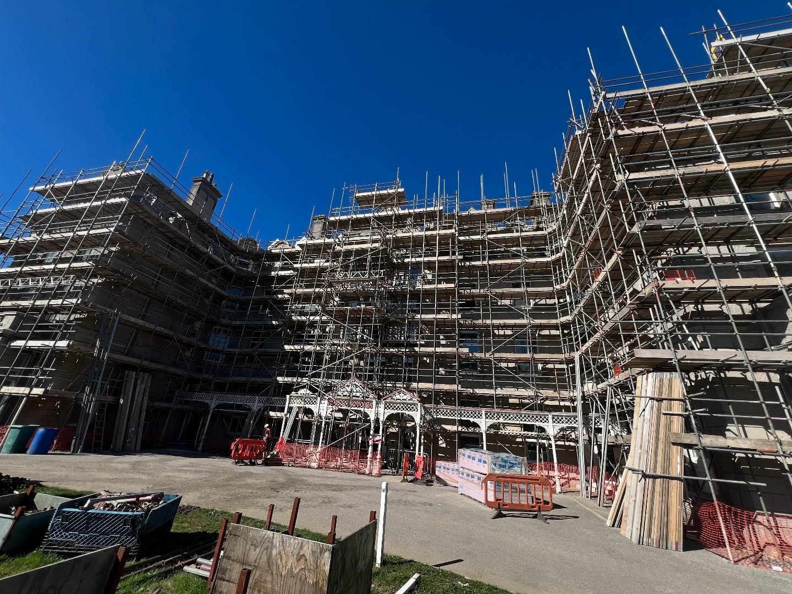
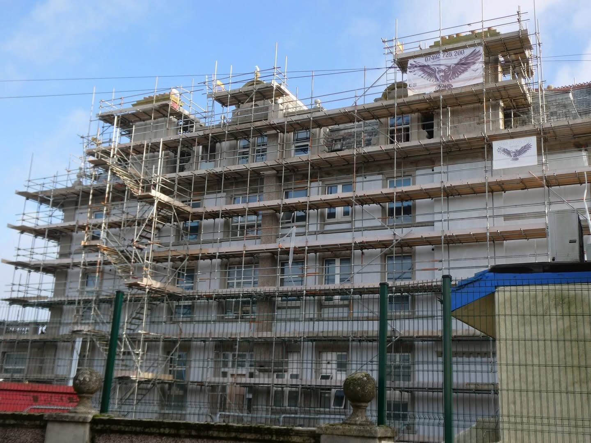
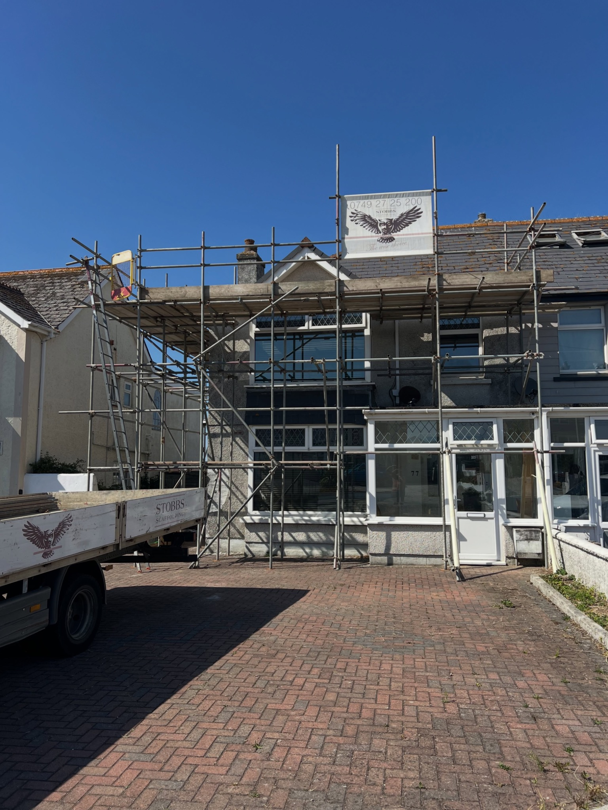
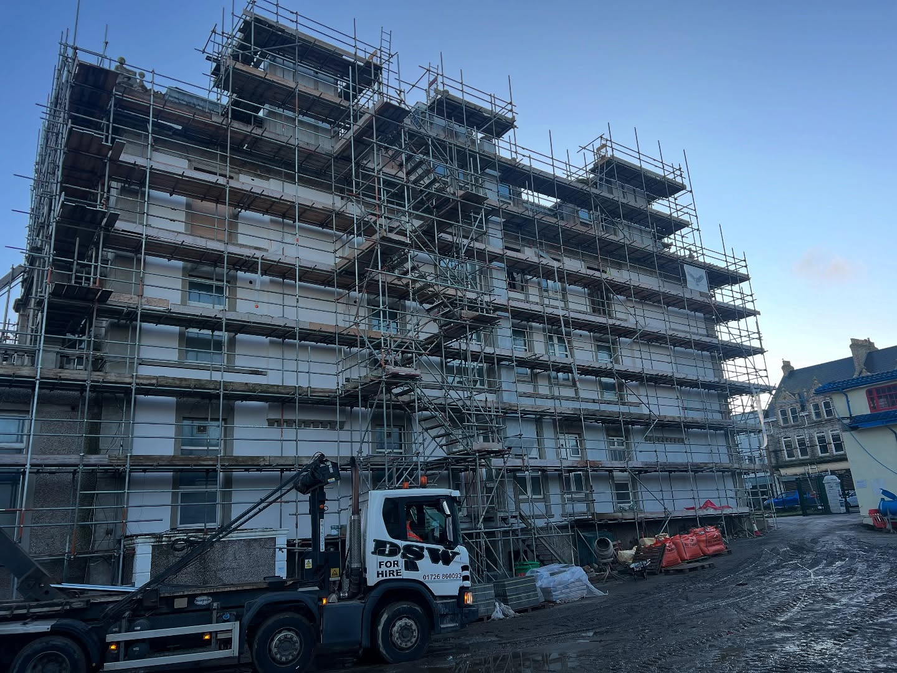
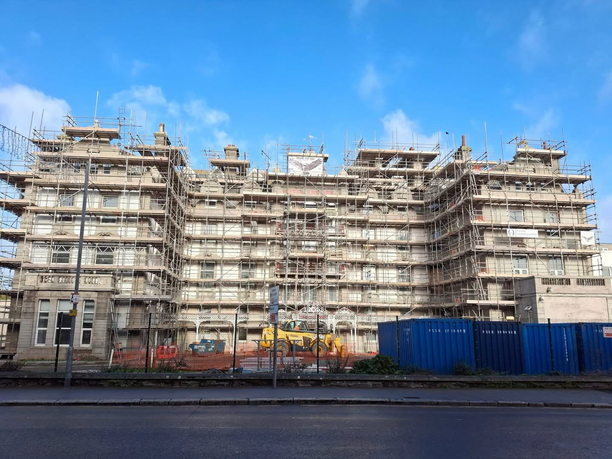
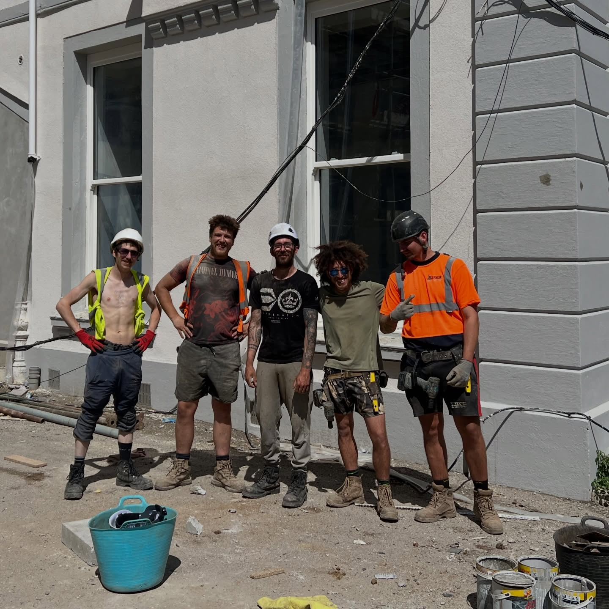
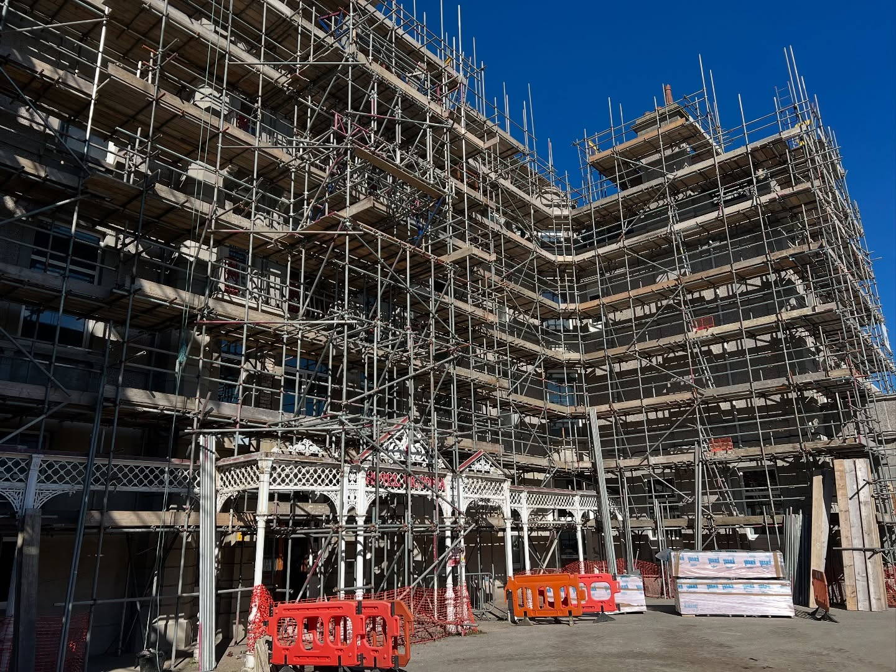
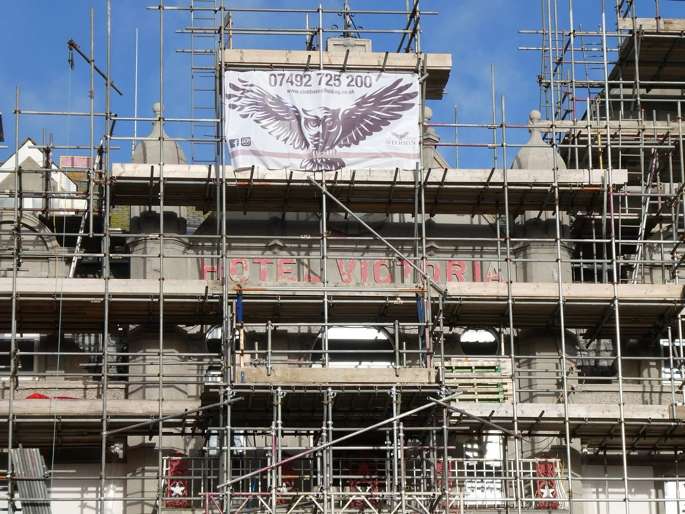

Scaffolding solutions across Cornwall.
Domestic, commercial and renovation scaffolding for projects of all sizes, with a professional service from start to finish.
Built around your project.
From residential properties to large-scale buildings, Stobbs Scaffolding provides scaffolding solutions across Cornwall. The supplied project work shows experience across domestic, renovation and substantial commercial sites.
Get a free quote
Scaffolding for every stage of the build.
Domestic Scaffolding
Scaffolding for homes, roofing work, maintenance and property improvements.
Commercial Scaffolding
Access solutions for larger commercial sites and multi-storey projects.
Renovations & Extensions
Practical scaffold access for renovation, restoration and extension work.
New Builds
Scaffolding support for new-build projects from structure through to finishing work.
Projects across Cornwall.

Large-scale project
Domestic scaffolding
Renovation access
Commercial scaffolding
Property works
Professional access
Scaffolding that works around the job.
Whether it is a domestic property or a major building project, the focus is on providing safe, practical access for the work being carried out.